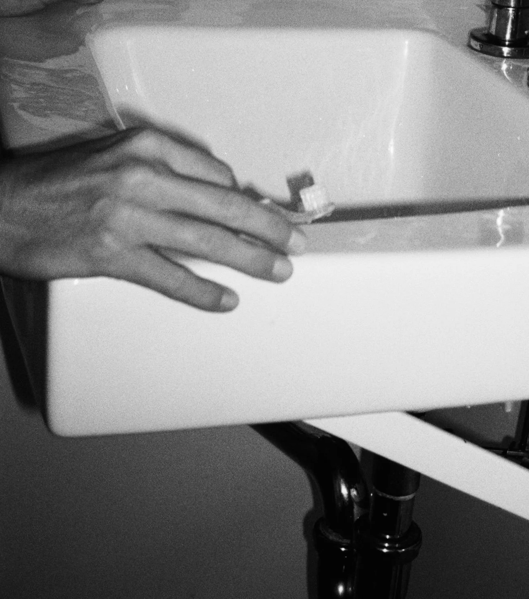

Read
NewStart with Signals
A short reset on what your skin and energy are communicating this week. Use it as a gentle check-in before making any adjustments to your routine.

Bulletin
“The greatest wealth is health.” — Virgil
Resume the next Method checkpoint and pick up exactly where
you paused.
A short reset on what your skin and energy are communicating this week. Use it as a gentle check-in before making any adjustments to your routine.
A warm, mineral-rich bowl made for low-effort nights and steady mornings. It is the kind of supportive meal that feels grounding without asking much of you.
Low-lift focus tracks for routine blocks, prep, and gentle transitions. Keep it nearby for slower starts, kitchen prep, or any moment that benefits from softer pacing.